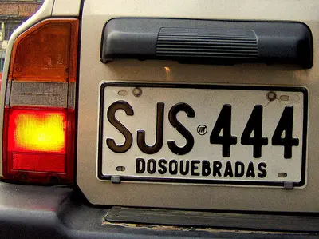

Dónde falla y por qué
Tres casos reales de las pruebas, con la lectura que devolvió el sistema.

Cajas por todas partes
El detector de respaldo marcó 23 regiones en una foto que solo tiene una placa. Sin YOLO, cualquier zona con bordes verticales parece placa.
23 cajas → ninguna lectura válida
Placa blanca de servicio público
El fondo blanco y la carrocería amarilla confunden al umbral. La placa WGL451 se leyó como otra placa válida.
WGL451 → AOG686 (sin preprocesar)
La ciudad se pega a la placa
La franja con el nombre del municipio entra en la misma caja y el OCR une las dos líneas en un solo texto.
SJS444 → 9HSOUEDRADAS444